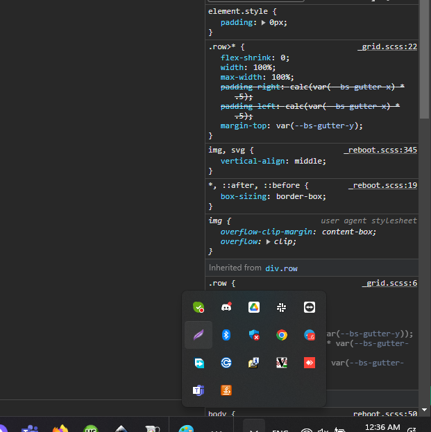
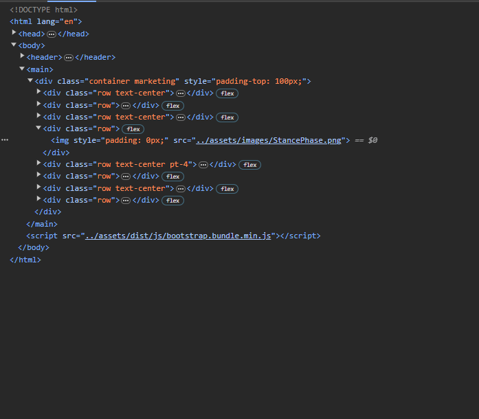

Walk Analysis Report
| Spatio-Temporal parameters | Value | Normal value | Units | |
|---|---|---|---|---|
| (Mean ± Std Dev) | (Mean ± Std Dev) | |||
| Analysis duration | 21.5 | s | ||
| Analysis duration | 119.90 ± 46.94 | 1.12 ± 0.23 | steps/min | |
| Analysis duration | 119.90 ± 46.94 | 1.12 ± 0.23 | m/s | |
| Spatio-Temporal parameters | Left Value | Right Value | Normal value | Units |
| (Mean ± Std Dev) | (Mean ± Std Dev) | (Mean ± Std Dev) | ||
| Gait cycle duration | 119.90 ± 46.94 | 1.12 ± 0.23 | s | |
| Stride length | 119.90 ± 46.94 | 1.12 ± 0.23 | m | |
| % Stride length | 119.90 ± 46.94 | 1.12 ± 0.23 | % height | |
| Step length | 119.90 ± 46.94 | 1.12 ± 0.23 | % str length | |
| Stance phase | 119.90 ± 46.94 | 1.12 ± 0.23 | % cycle | |
| Swing phase | 119.90 ± 46.94 | 1.12 ± 0.23 | % cycle | |
| First double support phase | 119.90 ± 46.94 | 1.12 ± 0.23 | % cycle | |
| Single support phase | 119.90 ± 46.94 | 1.12 ± 0.23 | % cycle | |
| Elaborated steps | 119.90 ± 46.94 | 1.12 ± 0.23 | % cycle |
Stance phases
Gait Cycle
Symmetry Index: .SymmetryIndex

